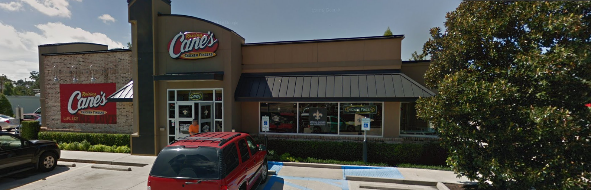

Raising Canes
When you think of Raising Canes what comes to mind first? The chicken? The fries? or is it just as simple as the secret sauce? When think about what you want to eat and you don't want anything to big or too small, but just don't want to cook Canes is the right stop. Guarenteed Raising Canes will make you want seconds if not then atleast some to take home. Many people in Louisiana and more states enjoy Canes and like diofferent things about it. Some may think the chicken and the meals that they make are great but then again some other people may just go for the sauce that was sworn secrecy upon the workers of Raising Canes.
Compared to other fast food resturants Raising Canes has a somewhat reasonable price. It is very affordable if you are by yourself or just with one other person. However with more people than 2 maybe even 4 ould cost a pretty penny, but trust them they will make the food you order worth it. Raising Canes if not already is the best place to gop get chicken fingers, even if you just want to gop get a box combo it would blow you away. Just thinking of it could make you want to leave your house or work just to go and see if it is as good as the last time thart you have had it.
| Picture | Address |
|---|---|
|  | Raising Cane's Chicken Fingers, 123 E Airline Hwy, LaPlace, LA 70068 |

|
Raising Cane's Chicken Fingers, 3344 Williams Blvd, Kenner, LA 70065 |

|
Raising Cane's Chicken Fingers, 4817 Lapalco Blvd, Marrero, LA 70072 |